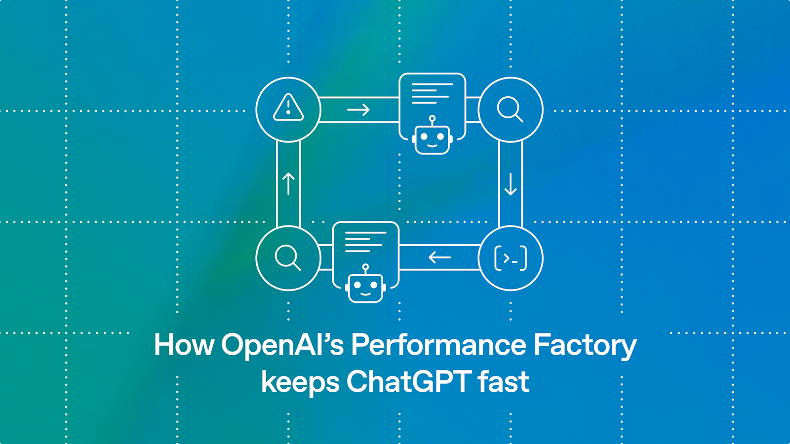

数学家称Claude给出黎曼猜想的Lean证明
有报道称一名34岁数学家借助Claude生成黎曼猜想的Lean形式化证明；相关讨论则质疑市场反应冷淡。目前仅见标题层面的说法，证明是否通过Lean校验、由谁复核等关键细节仍未知，不宜视为已验证。
有报道称一名34岁数学家借助Claude生成黎曼猜想的Lean形式化证明；相关讨论则质疑市场反应冷淡。目前仅见标题层面的说法，证明是否通过Lean校验、由谁复核等关键细节仍未知，不宜视为已验证。
报道介绍Agnes以测试时训练与Harness结合的双RSI进化架构支撑Agent自我提升，另一篇称其双系统决策与双层自进化使效率最高提速14倍、成本降至1/27。上述倍数均为报道方说法，需看基线设置与可复现实验。
论文提出“自改写”设定：给定权重、评分答案与自运行能力，27B模型可自行诊断失败并在无梯度、无训练的情况下编辑自身权重，报告准确率提升6.6分。摘要未完整给出评测范围，该结果的泛化性仍待核实。
报道称GPT-6.2 Astra在16项具身任务上的成功率较GPT-6 Astra翻倍。具体任务集合、评测条件与对比基线均未见披露，翻倍结论需以原始评测数据为准。
姚顺雨与混元团队在Reddit回答网友提问，称Hy小模型已进入路线图。目前仅确认规划层面的表态，发布时间、参数规模与开放方式等细节尚未公布。
报道称DeepSeek V1作者创业项目曝光，方向为开源Agent。除标题信息外，项目名称、开源范围与可用状态均未明确，暂不能视为已发布。
在2026世界计算大会上，昆仑元发布“元境星座”太空算力项目。报道仅给出计划名称与场合，卫星规模、算力指标与实施时间表等关键信息仍未知。
报道称Claude自行编写推理引擎，将等待首个输出字符的时间从12秒缩短到半秒。该说法缺少测试环境与对照条件说明，优化幅度尚待独立验证。
今日材料集中在两类信号：一是数学与推理能力的“突破”宣称与社区质疑并存；二是模型自我改写权重、Agent效率优化等工程进展。[1][9][2][10] 黎曼猜想相关说法只见标题与讨论标题，缺少可核验的证明文本，阅读时应把它当作待验证主张而非结论。[1][9] 论文与社区讨论方面，自改写权重的工作给出较具体的方法与分数描述，但需回到原文核对评测设置；Agent效率与具身模型报道多为产品宣传口径，建议优先看可复现指标。[3][11][2][10][4]

AI 中文摘要
MedChemBench 把一个具体问题变成了评测任务：模型能否结合分子结构与实验证据，在早期药物研究中挑出值得后续研究的候选物。 如果你关注科学推理评测，可先看题目如何构造、候选物的判断依据是什么。来源摘要没有给出模型分数，也没有提供前瞻性实验验证结果。
评估 AI 帮助科研的能力，先分清测量的是答题得分、节省的时间，还是由独立实验验证的结果。观察样本如何选取、有没有对照以及评价数据是否泄漏。
发布机构在正文中链接的论文，可核对这篇报道所依据的研究。
评估 AI 帮助科研的能力，先分清测量的是答题得分、节省的时间，还是由独立实验验证的结果。观察样本如何选取、有没有对照以及评价数据是否泄漏。
有公开出处的英文主题讲解，可先补概念，再回到当前条目。

AI 中文摘要
研究介绍了一套名为Performance Factory的系统：由Codex驱动的工作流，用于发现并修复性能问题，目标是帮助ChatGPT保持快速响应。作者报告的证据来自OpenAI自身对该系统的工程说明，称其能定位并处理性能问题，但给出的来源摘要未包含具体测量数字、对照设置或实验条件，也未说明比较基线。适用范围限于OpenAI对ChatGPT的性能维护实践；其他团队能否复现、效果是否可推广，以及具体性能改善幅度，均缺少证据。

AI 中文摘要
研究报告称，OpenAI 模型用于优化 Jalapeño 硅片中的电路，并改进 RISC‑V 核心设计，涉及 GPT‑6 Astra，展示 AI 辅助芯片设计的进展。作者报告的证据是这些优化结果，但摘要未给出对照或实验条件，也没有具体数字、比较基线或图表编号，因此只能视为作者自述的改进。适用范围限于摘要提及的 Jalapeño 硅片和 RISC‑V 核心设计，其他芯片类型是否适用未知；仍缺独立复现和详细实验设置。